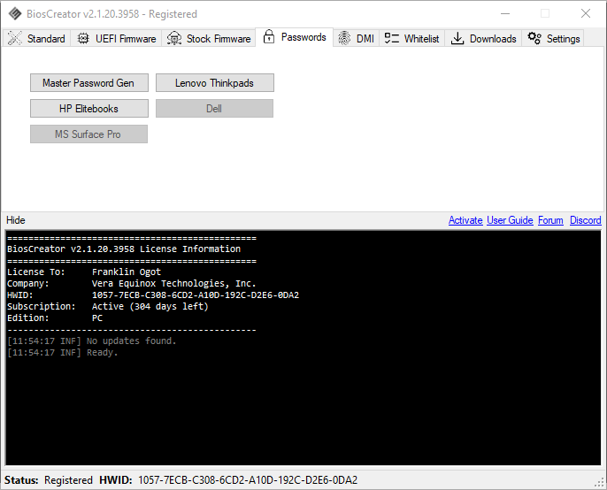

<style>
    .center {
        display: block;
        margin-left: auto;
        margin-right: auto;
        width: 50%;
      }

    a {
      text-decoration: none;
      display: inline-block;
      padding: 8px 16px;
    }
    
    a:hover {
      background-color: #ddd;
      color: black;
    }
    
    .previous {
      background-color: #f1f1f1;
      color: black;
    }
    
    .next {
      background-color: #160042;
      color: white;
    }
    </style>

<section class="support section bg-gray">
	<div class="container">
    <div class="container" style="text-align:justify; margin-bottom:50px;">
      <h4 class="join">How to reset BIOS Password?</h4>
      <h2><b>Consumer Laptops</b></h2>
      <p>To reset BIOS password for supported consumer laptops, selecting <b>"Passwords"</b> tab and click <b>Master Password Gen</b> button.</p>
      
      <br>
      <h2><b>Corporate Laptops</b></h2>
      <p>Go to <b>"Passwords"</b> tab, then select the button that corresponds to the laptop brand you want the password removed.</p>
      <br>

      <a href="{{ site.baseurl }}/faq/split-bin" class="previous">&laquo; Previous</a>
    <a href="{{ site.baseurl }}/faq/me-cleaning-failed" class="next">Next &raquo;</a>

		</div> <!-- End row -->
	</div> <!-- End container -->
</section> <!-- End section -->